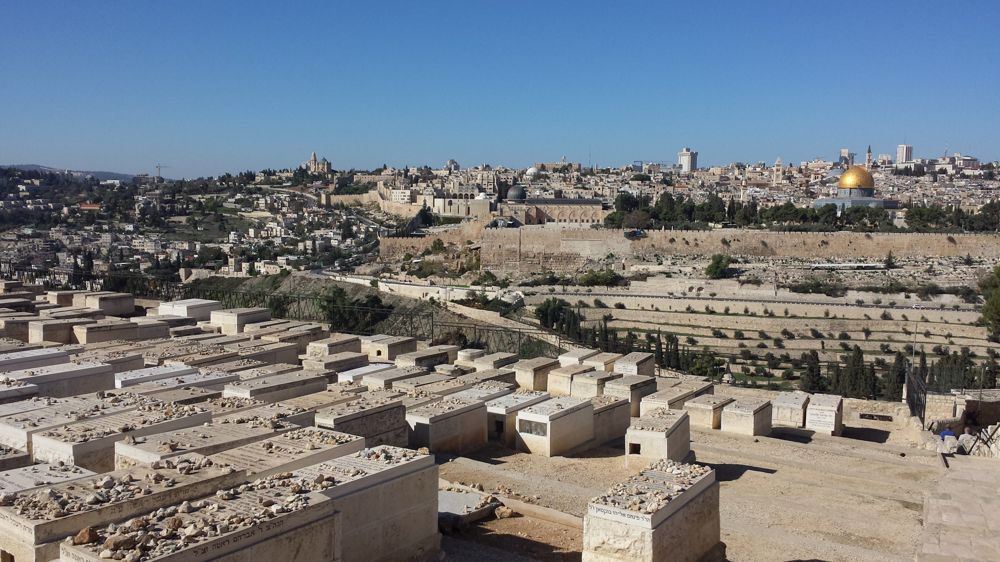
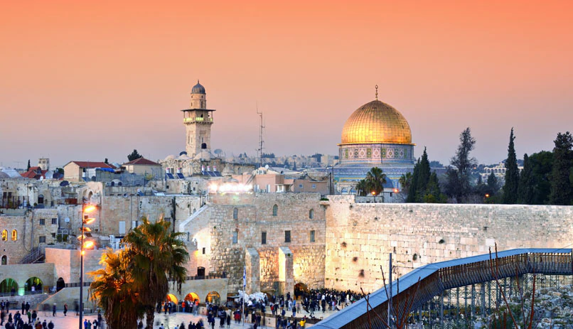
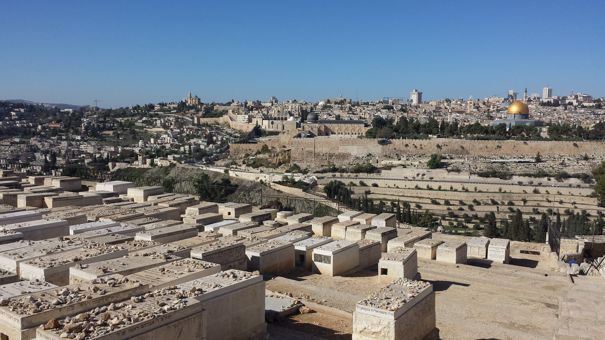
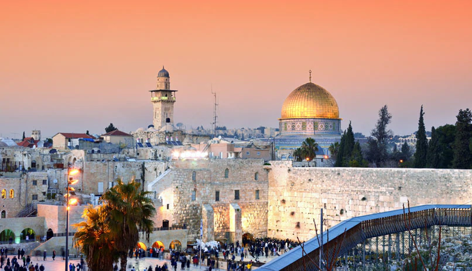

Pochi luoghi al mondo possono vantare una storia lunga come quella di Gerusalemme: ancora oggi ebrei (Israeliani) e musulmani (Palestinesi) combattono per il controllo della città. Motivo è l’enorme importanza di Gerusalemme non solo politica (in teoria, capitale di due stati), ma anche religiosa, vista la presenza sul suo territorio di importantissimi luoghi di culto per tutte e tre le grandi religioni monoteiste. Se parliamo di Gerusalemme, non possiamo non citare i luoghi più importanti di culto, come il Muro del Pianto, la Basilica del Santo Sepolcro e il Monte del Tempio. Da sempre, infatti, l’ebraismo, il cristianesimo e il musulmanesimo convivono, seppure non nel modo sperato, all’interno della città. Oltre ai luoghi di culto, vi consigliamo di esplorare la cucina biblica dell’Eucalyptus è un’occasione unica di degustare i piatti dell’epoca del re Salomone.